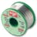

Things used in this project
Hardware components |
|

|
Blues Notecarrier A |

|
Blues Notecard (Cellular) |
| FT232 USB-Serial Converter Type 1 | |
| USB-A to Mini-USB Cable | |

|
Jumper wires (generic) |
| STM32F411 "BlackPill" Development Board | |

|
Buzzer |
| 1N4007 – High Voltage, High Current Rated Diode | |
| 2N3904 TO-92 - 10 Pieces | |
| Resistor 1k ohm | |
| Resistor 100 ohm | |
| 5 mm LED: Yellow | |
| 5 mm LED: Green | |
| 5 mm LED: Red | |
Software apps and online services |
|

|
Arduino IDE |

|
Blues Notehub.io |

|
Twilio SMS Messaging API |
| Fritzing | |
Hand tools and fabrication machines |
|

|
Soldering iron (generic) |
|  | Solder Wire, Lead Free |
| Digilent Mastech MS8217 Autorange Digital Multimeter | |

|
Multitool, Screwdriver |
| Soldering Iron Tip, Knife | |
Story
A Smart Crutches Fall Detection IoT Project
Taking care of someone with mobility is an easy task. As a care, sometimes you go out to do important things such as shopping, etc leaving him or her on their own. A person, who uses crutches to walk, long walk long distances without any problem. However, there are many cases of these people with mobility impairments falling. An assistive Tech like A Smart Crutches Fall Detection IoT Project can help in such incidents by sending an SMS with the exact location of the incident to a caretaker.
Figures 01 and 02 show the breadboard connections of the completed working project.
The demo video in Figure 03 demonstrates how the Smart Crutches Fall Detection IoT Project works.
=======================================================================
How to build it!
Hardware Components
Figure 03 shows the top view of the Notecarrier AA.
Figure 04 shows the bottom view of the Notecarrier AA.
Notecarriers are designed to bridge the gap between prototype and production for the Notecard. The Notecard is designed to be socketed directly onto the circuit board using an edge connector socket, along with a customer's MCU, sensors, and controls. While such a model provides a highly modular configuration for the final product, it can make prototyping unnecessarily difficult.
Notecarriers offer breakout connections for the Notecard, as well as circuitry to provide power management, protection, and signal amplification.
Figure 05 shows the top view of the Notecard.
Figure 06 shows the bottom view of the Notecard.
The Notecard is a device-to-cloud data pump that reduces the complexity of building connected solutions with secure, reliable cellular. As an embeddable system on module (SoM), the Notecard can be used with any microcontroller for both greenfield and retrofit projects using your design, or one of our custom-designed Notecarriers.
With just two lines of code, you can send data to the cloud in minutes, with no complex device registration or provisioning required. With a powerful JSON-based API, you can program the Notecard over USB, or control it from your preferred microcontroller or single-board computer using one of our open-source firmware libraries. Connect from your preferred host to the Notecard using Serial or I2C.
The Notecard is designed to work with a cloud service for ingesting and processing device data. Notehub provides secure device connectivity, project and fleet management, and simple routing to 3rd party cloud services.
Figure 07 shows the top view of the Black Pill STM32F411 without straight male pin headers.
Figure 08 shows the bottom view of the Black Pill STM32F411 without straight male pin headers.
This simple development board for the STM32F411 is a great way to add a powerful STM chip to your next project. Featuring the STM32F411CEU6, this chip has 512 KB of flash, 128 KB of SRAM, and runs at 100 MHz. There's a spot on the bottom for wide SOIC flash memory - you could solder on a 2 MB SPI flash memory chip (it's barely wide enough to sit on the pads) to give yourself more space for data logging or file storage.
This dev board is for the more advanced users, we don't have detailed tutorial usage for it - check online communities for STM32 boards to get project ideas and code samples! You can use STM32duino for Arduino support, and both MicroPython and CircuitPython have support for this chip.
The board features a USB C connector, with a 3.3V 100mA LDO regulator. There are both 25mhz and 32.768 KHz crystals on board. There are a few handy buttons: a BOOT button for entering the ROM DFU bootloader, a reset button, and a generic button on PA0 for users. One power LED and one user-controllable LED on PC13.
The chip itself has multiple UART, I2C, SPI, I2S, and timer peripherals (check the datasheet for the pin multiplexing as you can only use some pins for each peripheral). The USB is at full speed. There's a single ADC multiplexed to 10 inputs.
Simple, but has everything you need to get started. We recommend pairing with an ST-Link-compatible dongle if you want to use a debugger. Thanks to the STM bootloader in ROM, you don't need a programmer to load binary firmware! Comes with a loose header you can solder in to plug into a breadboard.
Male Pin Header – Straight 40P 2.54mm SIL
Features / Specs
- Gender: Male
- Style: Straight SIL (Single In-Line)
- Number of Pins: 40 (Can be cut as required)
- Number of Pin Rows: 1
- Pin Pitch: 2.54mm
- Pin Material: Iron
- Plating Material: None
- Max Current Rating: 3A
Figure 10 shows the bottom view of the Black Pill STM32F411 with straight male pin headers.
Figure 11 shows the top view of the Black Pill STM32F411 with straight male pin headers.
DS Protoboard – 7x9cm
Features / Specs
- PCB Type: Double Sided
- PCB Finish: HASL (Hot Air Solder Level)
- Soldermask: Green
- Through-Hole Pitch: 2.54mm
- Through-Hole Diameter: ~1mm
- Mounting Hole Diameter: ~3.1mm
- Mounting Hole Spacing (Centre to Centre): Long Side: ~83mm / Short Side: ~64.9mm
- PCB Dimensions: ~(70 x 90mm)
- PCB Thickness: ~1.5mm
Figure 13 shows the DS Prototyping board that I have cut off the 7x9 cm DS Proto board and built the shield.
Male Pin Header – Straight 40P 2.54mm SIL
Features / Specs
- Gender: Male
- Style: Straight SIL (Single In-Line)
- Number of Pins: 40 (Can be cut as required)
- Number of Pin Rows: 1
- Pin Pitch: 2.54mm
- Pin Material: Iron
- Plating Material: None
- Max Current Rating: 3A
Figure 15 shows how I soldered the male pin headers to a shield that connects to the female pin headers of the Notecarrier AA.
Female Pin Header – Straight 40P 2.54mm SIL
Features / Specs
- Gender: Female
- Style: Straight SIL (Single In-Line)
- Number of Pins: 40 (Can be cut as required)
- Number of Pin Rows: 1
- Pin Pitch: 2.54mm
Figure 17 shows the top view of the shield after soldering the female pin headers to the shield. These arr the pin headers to which I have connected the Black Pill STM32F411.
Figure 18 shows the bottom view of the shield after soldering the female pin headers to the shield. These arr the pin headers to which I have connected the Black Pill STM32F411.
This module is a breakout board for an active buzzer. Active buzzers have an internal oscillator that generates a waveform to drive the transducer inside the buzzer. They operate at a preset frequency and are only able to produce a single tone. All you need to do is apply a DC voltage within the operating voltage range of the buzzer and voila, let there be sound.
Features / Specs
- Model: KY-012
- Operating Voltage: 3.5 – 5.5VDC
- Operating Current: 30mA @ 5VDC
- Resonant Frequency: 2.5kHz ±300Hz
- Minimum Sound Output: 85Db @ 10cm
- Operating Temperature: -20°C to +70°C
- Standard 2.54mm Pitch Pin Header
- Connect Ground to the “-” pin, and connect your positive supply to the “S” pin
General purpose NPN Bipolar Transistor in a TO-92 Package.
Features / Specs
- Model: 2N3904
- Manufacturer: Generic Chinese Brand
- Type: General Purpose NPN
- Max Continuous Collector Current: 200mA
- Max Collector-Emitter Voltage: 40VDC
- Max Power Dissipation: 625mW
- DC Current Gain (Min): 40
- Package: TO-92
1N4007 General Purpose Rectifier Diode in a Leaded DO-41 package.
Features / Specs
- Manufacturer: MIC
- Part Number: 1N4007
- Diode Type: General Purpose Rectifier Diode
- Max Avg Forward Current: 1.0A
- Max Repetitive Peak Reverse Voltage: 1200V
- Max Forward Voltage @ 1.0A: 1.1V
- Package: DO-41
Figure 22 shows the top view of the shield with all the components that have been soldered onto it.
Figure 23 shows the bottom view of the shield and how the wires have soldered from the male pin headers to the components.
Figure 24 shows the top view of the shield after securing the Notecarrier to the clear plastic base.
Figure 25 shows the top view of the FTDI 232RL USB Adapter.
Figure 26 shows the bottom view of the FTDI 232RL USB Adapter.
This USB to Serial Adapter board makes use of an FT232RL USB-Serial converter chip to allow UART devices to communicate with applications on a PC. It has indication LEDs for Rx and Tx communication as well as a jumper which allows you to switch between a 3.3V or 5V target supply voltage.
Features / Specs
- USB-Serial Chip: FTDI FT232RL
- USB Connector: Mini USB
- Indication LED’s: Power / Rx / Tx
- Selectable target supply and logic level of UART – 5VDC / 3.3VDC
- Header Pin Pitch: 2.54mm
- Dimensions: ~(36.5mm x 18.3mm x 11.3mm)
Mini USB Cable – 30cm
Features / Specs
- Connector Type: USB Type-A Male to 5-Pin Mini USB Male
- Length: 30cm
- Cable Type: Multi-stranded, Shielded
- Colour: Transparent Blue
Figure 28 shows the pins (RX, TX, and GND) of the FTDI 232 that I have used to serially program the Black Pill STM32F411.
Figure 29 shows the top view of the Smart Crutches Fall Detection IoT Project with the shield connected to the Notecarrier AA and the Black Pill STM32F411 connected to the shield without the three LEDs.
Figure 30 shows the back side of the Notecarrier AA. The picture in this figure shows the AA battery holder for the three AAs batteries.
Figure 31 shows the top view of the Smart Crutches Fall Detection IoT Project with the shield connected to the Notecarrier AA and the Black Pill STM32F411 connected to the shield with the three LEDs connected to the shield using a ribbon cable.

Figure 32 shows the long plastic spacers that I have used between the bottom plastic clear base and the top plastic clear cover. I have used the short spacers between the clear plastic base and the Notecarrier AA.
Figure 33 shows the screws that I have used to secure the Notecarrier to the plastic clear base.
Figure 34 shows the top view of the Smart Crutches Fall Detection IoT Project with a clear cover on top. NB (INCLUSIVE INNOVATION)! I have used the red slide switch for ON/OFF in response to the suggestions made in the Feedback from the ContestMasters. I have also included three LEDs that indicate that the successful sending of the message to the recipient.
The picture in the above Figure 35 shows the top view of the Smart Crutches Fall Detection IoT Project after securing the Notecarrier AA to the clear plastic base and covering it with a clear plastic cover.
Figure 36 shows the Smart Crutches Fall Detection IoT Project when it is facedown.
The picture in Figure 37 shows the rear side of the Smart Crutches Fall Detection IoT Project when it is not secured to the crutch.
The green LED that blinks every +/- 5 seconds in Figure 38 shows that the program is executing without errors.

Figure 39 shows the Smart Crutches Fall Detection IoT Project connected to the laptop via a USB during the programming of the Black Pill STM32F411 Development Kit.
=======================================================================
Tools
The following are the tools that I have used to build this project.
Hollow base - Only sides are in contact with the work surface sponge included
Specifications:
- Spring Holder Length: 100mm
- Centre Hole Dia. : 23mm
- Inner Cup Size: 32mm

JCD Soldering iron kit adjustable temperature 220V 80W LCD solder welding tools Ceramic heater soldering tips Desoldering Pump
Soldering iron Specifications:
- Voltage: AC220-240V
- Power: 80W
- Frequency: 50Hz/60Hz
- Temperature Range: 180~500℃/356~932℉
- Temperature Stability: ±5℃
- Heating Type: Wmore
- Ceramics Element Soldering Iron Tips: 900M-B1.2
- Wire Length: 1.4m / 55.12in
- Soldering Iron Size: Approx.242*25*25mm/9.6*0.98*0.98in
- Soldering Iron Weight: Approx.96g/3.4oz
- Package Size: Approx. 254*55*35mm/10*2.2*1.4n
- Package Weight: Approx. 500g
Soldering Iron with Upgrade Technology Inner-heated ceramic technology makes the 60w soldering iron heat up very quickly; which both maintains the temperature stability and reduces energy consumption. Upgraded heat-resistant material and the steel-pipe four ventilation holes on the soldering iron design help cool fast. Soldering Iron Support Station A Portable soldering iron stand with a cleaning sponge holds the soldering iron to ensure safety and convenience. It is safer than any other thin soldering stand. The maximum extent to avoid the user getting burned and damaged
Grip Resin Core Solder combines advanced resin core flux technology with high-quality materials to deliver precise, reliable, and professional soldering results. Whether you're soldering delicate electronic components or tackling heavy-duty metalwork, trust Grip Resin Core Solder to meet your soldering needs with precision and efficiency.
The figure shows a Long Nose, Pliers
- Designed with a thin, grooved nose to assist with gripping, twisting, and wrapping wires.
- Drop forged chrome vanadium steel with comfortable grip-dipped handles.
- Excellent edge sharpness.
- Compact and easy to handle
The picture in Figure 78 shows a 2 in 1 Screw Driver. It contains a Small Flat and Phillips Bit. Quick and easy to change a bit, just pull the bit out turn it around, and pop it back in.
The figure shows a Long Nose, Pliers
- Designed with a thin, grooved nose to assist with gripping, twisting, and wrapping wires.
- Drop forged chrome vanadium steel with comfortable grip-dipped handles.
- Excellent edge sharpness.
- Compact and easy to handle
Fragram Adjustable Metal Hacksaw - 300mm
Features:
- Adjustable blade length from 10"/250mm to 12"/300mm
- Cuts to 2.75"/70mm in depth - For DIY and home use
- Angle adjustment 45/90 degree
- Adjustable for 10" and 12" blades
- Dimensions: 12.5cm x 45cm x 2cm
- Material: Metal
- Weight: 230g
- Warranty: 12 Months
=======================================================================
Software
Arduino IDE
Figure 48 shows all the included files in this project and definitions of all the GPIOs used in this project.
Figure 49 shows the declaration and initialization of all the global variables used in the project.
Figure 50 shows the initialization of all the General Purpose Input Output pins (GPIOs).
Figure 51 shows the part of the code that toggles the three LEDs (Red, Green, and Yellow) and beeps the buzzer three times. This code is executed after the initialization of the GPIOs. The last part of the code shows the settings of the Notecard.
Figure 52 checks the current firmware version of the Notecard, the Notecard outbound firmware update, and the temperature of the built-in temperature sensor.
Figure 53 shows the code that pulls the AUX1 pin low during Device Firmware Update. The middle part of the code sets the card location mode to periodic, and the last part stops the card location tracking.
The code in Figures 54 and 55 shows the status of the Notecard. If it is connected to the network, the built-in LED on the Black Pill STM32F411 is switched ON for 1 second, otherwise, it is switched for 250ms indicating that the Notecard is not connected to the network. The last part of Figure 55 checks if GPS/GNSS has acquired location information.
The code in Figure 56 reads the motion of the Notecard. If there is an alert of a free fall in the response, the Smart Crutches Fall Detection IoT Project will toggle the LEDs and beep the buzzer five times, indicating the detection of a free fall.
The code in Figure 57 reads the value of the motion.
The code in Figure 58 is the function that is called every time the Smart Crutches Fall Detection IoT Project detects a free-fall motion.
The code in Figure 59 checks if the GOS/GNSS has acquired location information.
The code in Figure 60 is part of the code in Figure 59.
Figure 61 shows the code that sends the data in JSON format to Notehub.io.
The code in Figure 62 is part of the code in Figure 61 that sends the data in JSON format to Notehub.io.
========================================================================
Online Services
The picture in Figure 63 shows the Blues Developer Center home page with many resources for development purposes. You can use these resources to start leveraging this infrastructure.
The picture in Figure 64 shows the events of one of my devices that I'm using to communicate with the Smart Crutches Fall Detection IoT Project.
Click the + Create Project to create a new project. In the Project window, type in the name of your project.
Go to the devices page shown in Figure 66 to add your device. After you have successfully added your device, go to your project settings page where you will find the settings of your project.
Project settings page.
Project settings page.
Project settings page.
Project settings page.
Project settings page.
The picture in Figure 72 shows the page where you can add routes to route to route your messages.
Figure 73 shows the page on which you can select your routes.
Figure 74 shows the page on which you can select your routes.
Figures 73, 74 and 75 show the routes that you can use to route your messages to your preferred endpoints. In my project l'm using Twilio as my endpoint.
The page in figure 76 shows the Twilio configurations. It is time for you to use the AccountSID and Auth Token you kept safe after creating your Twilio Trial account.
The page in Figure 77 is part of the configuration in Figure 76.
=======================================================================
Twilio
Twilio is a business text messaging platform with trust, quality, and engagement.
Build business messaging solutions for customer care, conversational commerce, and transactional messaging with APIs that integrate with the most popular messaging channels like conversational chat, SMS, MMS, WhatsApp, Facebook Messenger, and Google’s Business Messages—all from one platform.
Figure 78 shows the home page of the Twilio online platform for messaging Application Programmable Interface (APIs). Before you start using this platform, you have to create a free trial account. You will be given a $15.00 credit as part of the free trial. This credit is enough for you to start testing your applications.
Figure 79 shows the page for Signing up as a new user of the platform.
The page in Figure 80 is part of the page in Figure 79 for Signing up.
After signing up, you will be presented with a window shown in the above figure. In this window, you have to enter the email address that you used during your sign-up process.
You have to enter the password in the window in Figure 82 and click continue. You will receive an SMS with a One-Time Password (OTP) on your phone. The cellphone number to which the SMS is sent is the same as the one you used during the cellphone number verification process.
Figure 83 shows the window that you will see after entering your password.

If you have successfully entered the correct email address and password, you will see a page with a bold welcome message.
Using the trial credit you must buy a number. The cost of the number is +/-$1.50 depending on the services such as SMS, Voice, etc available with that number. Refer to the SMS Quickstart guides for more https://www.twilio.com/docs/messaging/quickstart info.
=======================================================================
A Smart Crutches Fall Detection IoT Project First Test
Figure 88 shows the SMS received from the Smart Crutches Fall Detection after it fell.